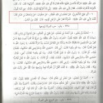

Unlike our usual content, in which we provide refutation upon refutation to every little point that is brought up by Shias, in this article, we will briefly be discussing the jealousy of the Mother of Believers A’isha and the verses of Surat Al-Tahreem.
According to the Merriam-Webster’s Definition of Jealousy page, we find that jealousy is described as: “an unhappy or angry feeling caused by the belief that someone you love (such as your husband or wife) likes or is liked by someone else.”
To make matters even clearer to readers, we have taken it upon ourselves to study A’ishas behavior in other hadiths. The theme of jealousy was not uncommon.
A’isha’s Admittance of her Jealousy
Before getting into that, we remind our readers that A’isha herself narrated from the Prophet – peace be upon him – that he said: “The best from amongst you are those that are the best of you to your wives, and I am the best from amongst you with his wives.” Sunan Al-Tirmithi #3830. Al-Tirmithi authenticates this narration.
It is needless to say that the Prophet’s – peace be upon him – had the best of qualities and was revered for it by all those that surrounded him. It was not hard for those that were close to him to get attached to his nature and his wives were very much in love with him because of those qualities.
The jealousy of A’isha was not a well kept secret. Decades after the death of the Prophet – peace be upon him – she would tell her nephew Urwa of how her jealousy drove her actions when she was much younger. In Saheeh Al-Bukhari #5565, a group of Jews pass by the Prophet – peace be upon him – and say, “Al-Saam (death) be upon you” A’isha cursed them intensely by saying, “Al-Saam and curses be upon you.” The Prophet – peace be upon him – calms her down and advises her to show kindness even when faced with such people.
In Saheeh Muslim #5030, during A’isha’s “night”, the Prophet – peace be upon him – left her. When he returned, he asked, “What is wrong A’isha? Were you jealous (that I left)?” She said: “How could someone like me not be made jealous over someone like you?!” In a similar narration in Saheeh Muslim #750 she states that she thought that the Prophet – peace be upon him – went to one of his other wives, and that drove her check up on him.
A’isha was immensely jealous of Khadijah, the deceased wife of the Prophet – peace be upon him – , since he had not loved any of his wives as much as he loved Khadijah. A’isha in Saheeh Al-Bukhari #3532 said, “I was not jealous of any of the Prophet’s – peace be upon him – wives as much as I was made jealous by Khadijah,” for the Prophet – peace be upon him – used to praise her even after her death. In another narration in Al-Bukhari #3536, A’isha describes that she was jealous by the visitation of Khadijah’s sister Haala, in which the Prophet – peace be upon him – seemed overjoyed since she reminded him of Khadijah. A’isha, driven by jealousy, comments that Allah has replaced his “old wife” with a new one that is better than the old one.
Some narrations are even more explicit than others. In Saheeh Al-Bukhari #5234, A’isha complains of a severe headache. The Prophet – peace be upon him – aware of his close death said, “If that happened while I was alive, I would ask forgiveness for you and supplicate to Allah for you.” She said, “I think you would like it for me to die, and if that happened, you would be having intercourse with one of your wives during that very night.”
In one narration by Anas in Saheeh Al-Bukhari #4824, the Prophet – peace be upon him – was in the house of A’isha when Um Salama sent some food to him. A’isha was filled with so much jealousy, that she broke the plate that the food was sent on. The Prophet – peace be upon him – did not rebuke her. He empathized with her and simply said to those that were present, “Your mother (of the believers) was made jealous.”
Though, as we’ve mentioned above, what really got to A’isha was that there were always a fear of an additional woman that she would have to share her husband with. She narrates in an authentic chain in Musnad Ahmad #25161 that Juwairiyah was a beautiful woman and that A’isha hated her as soon as she saw her because she knew that the Prophet – peace be upon him – would be attracted to her. Of course, her fears were confirmed when he eventually married her soon after.
In one heart-warming narration from Saheeh Al-Bukhari #4810, A’isha and Hafsa are travelling with the Prophet – peace be upon him – while the rest of his wives were in Madinah, meaning that they would get more alone time with him. While on the way, Hafsa suggested to A’isha that they should switch camels. A’isha did not mind doing so. Though, it was night and the Prophet – peace be upon him – could not make them out. He approached A’isha’s camel thinking that it was being ridden by her. He met Hafsa, greeted her, and continued until they got off their camels, and perhaps even entered camp. A’isha, filled with jealousy, got on the ground and cried, “O’ Allah, send a scorpion or a snake to bite me, for I am powerless to say anything to him!”
The Reasons for A’isha’s Jealousy
The very definition is often ignored by Shias when dissecting the actions of A’isha and turning them against her, since much of her actions were driven by her extreme attachment to the Prophet – peace be upon him – and her love for him.
The factors that drove this jealousy were many. Perhaps the most obvious of these factors is that the Prophet – peace be upon him – was married to multiple women. Now, having to share a man with one other woman is bad enough, let alone having to share her with several women. Keep in mind that the Prophet – peace be upon him – was fair with his wives and would give each one of his wives a “night”. With that in mind, it was uncommon for A’isha to not be with her husband for a whole week.
Another factor was the age of A’isha. As we find in authentic reports in the Saheehain through Urwa bin Al-Zubair and Al-Aswad, A’isha was nine years old when her marriage to the Prophet – peace be upon him – was consummated. With that in mind, she was the only teenager from amongst his wives. By the time the Prophet – peace be upon him – passed away, A’isha was around eighteen years old.
Another factor was that A’isha was the only virgin from amongst the wives of the Prophet – peace be upon him – . The rest of his wives were either divorced or widows. That perhaps made it easier for them to cope with having to share him, since they were married before, and were thankful that they had the chance to be married again.
An important factor to keep in mind is that A’isha was one of the earliest marriages. After the death of Khadijah, the Prophet – peace be upon him – first married Sawda bint Zum’a, who was in her fifties, then married A’isha. So, for A’isha, things simply grew worse every once in a while when the Prophet – peace be upon him – got married to someone new. It isn’t so hard to understand that the first wife, in a regular marriage, would be filled with a lot more jealousy than the fourth wife, who is entering a marriage while being fully aware that she has to share her husband with three other women.
Context of Surat Al-Tahreem 1-12
Surat Al-Tahreem is often quoted by Shias in order to attack A’isha and Hafsa. Firstly, it is important to be aware of the verses in question. Then, we will briefly provide the Shia argument, and end it off with providing the context behind the verses.
The verses from Surat Al-Tahreem 1-12 are as follows:
- O Prophet! Why do you forbid (for yourself) that which Allah has allowed to you, seeking to please your wives? And Allah is Oft-Forgiving, Most Merciful.
- Allah has already ordained for you (O men) the absolution from your oaths. And Allah is your Maula (Lord, or Master, or Protector) and He is the All-Knower, the All-Wise.
- And (remember) when the Prophet (صلى الله عليه وسلم) disclosed a matter in confidence to one of his wives (Hafsah), then she told it (to another i.e. ‘Aishah). And Allah made it known to him; he informed part thereof and left a part. Then when he told her (Hafsah) thereof, she said: “Who told you this?” He said: “The All-Knower, the All-Aware (Allah) has told me.”
- If you two (wives of the Prophet صلى الله عليه وسلم : ‘Aishah and Hafsah رضي الله عنهما) turn in repentance to Allah, (it will be better for you), your hearts are indeed so inclined (to oppose what the Prophet صلى الله عليه وسلم likes); but if you help one another against him (Muhammad صلى الله عليه وسلم), then verily, Allah is his Maula (Lord, or Master, or Protector), and Jibril (Gabriel), and the righteous among the believers; and furthermore, the angels are his helpers.
- It may be if he divorced you (all) that his Lord will give him instead of you, wives better than you – Muslims (who submit to Allah), believers, obedient (to Allah), turning to Allah in repentance, worshipping Allah sincerely, given to fasting or emigrants (for Allah’s sake), previously married and virgins.
- O you who believe! Ward off yourselves and your families against a Fire (Hell) whose fuel is men and stones, over which are (appointed) angels stern (and) severe, who disobey not, (from executing) the Commands they receive from Allah, but do that which they are commanded.
- (It will be said in the Hereafter) O you who disbelieve (in the Oneness of Allah – Islamic Monotheism)! Make no excuses this Day! You are being requited only for what you used to do.
- O you who believe! Turn to Allah with sincere repentance! It may be that your Lord will expiate from you your sins, and admit you into Gardens under which rivers flow (Paradise) – the Day that Allah will not disgrace the Prophet (Muhammad صلى الله عليه وسلم) and those who believe with him. Their Light will run forward before them and (with their Records – Books of deeds) in their right hands. They will say: “Our Lord! Keep perfect our Light for us [and do not put it off till we cross over the Sirat (a slippery bridge over the Hell) safely] and grant us forgiveness. Verily, You are Able to do all things.”
- O Prophet (Muhammad صلى الله عليه وسلم)! Strive hard against the disbelievers and the hypocrites, and be severe against them; their abode will be Hell, and worst indeed is that destination.
- Allah sets forth an example for those who disbelieve: the wife of Nuh (Noah) and the wife of Lut (Lot). They were under two of our righteous slaves, but they both betrayed them (their husbands by rejecting their doctrine). So they [Nuh (Noah) and Lut (Lot) عليهما السلام] availed them (their respective wives) not against Allah and it was said: “Enter the Fire along with those who enter!”
- And Allah has set forth an example for those who believe: the wife of Fir’aun (Pharaoh), when she said: “My Lord! Build for me a home with You in Paradise, and save me from Fir’aun (Pharaoh) and his work, and save me from the people who are Zalimun (polytheists, wrong-doers and disbelievers in Allah).
- And Maryam (Mary), the daughter of ‘Imran who guarded her chastity. And We breathed into (the sleeve of her shirt or her garment) through Our Ruh [i.e. Jibril (Gabriel) ], and she testified to the truth of the Words of her Lord [i.e. believed in the Words of Allah: “Be!” – and he was; that is ‘Îsa (Jesus), son of Maryam (Mary) as a Messenger of Allah], and (also believed in) His Scriptures, and she was of the Qanitun (i.e. obedient to Allah) .
Shias, often go out of their way in order to prove that these verses suggest that A’isha and Hafsa were disbelievers.
Though, one should always start by examining the context of the verses which can be found in Saheeh Al-Bukhari #2288 which is narrated by Ibn Abbas through Omar and A’isha. The narration starts off with Ibn Abbas asking Omar about the two women that are described in the verses above, suggesting that this was not common knowledge amongst the companions of the Prophet – peace be upon him – even though many years have passed since the incident. Omar did not hold back by hiding the name of his beloved daughter, but immediately stated that the verses were about Hafsa and A’isha. He then carried on with the narration, stating that he had issues with his wife’s attitude, since she has become aggressive ever since coming to Madinah, since the women in Madinah were not as submissive as the Makkan women. His wife then lashed back at him one day, while claiming that the wives of the Prophet – peace be upon him – would talk back to him and would give him the silent treatment. Omar, shocked, rushed to Hafsa, wondering if she treated the Prophet – peace be upon him – in such a manner. She admitted that she did. Omar, then, advised her not do so, then went back home. Then, one night, there was a knock on the door, and Omar opened up to hear news that the Prophet – peace be upon him – divorced his wives. Omar entered upon Hafsa and found her crying. Hafsa then said that she was not unsure if he did.
Omar then explained to Ibn Abbas that the Prophet – peace be upon him – isolated himself from his wives for twenty-nine days, and that he did this when Hafsa shared her “secret” with A’isha.
Even though Omar does not go into the details of what happened, A’isha herself does include those details in another hadith in Saheeh Al-Bukhari #4531. She states that the Prophet – peace be upon him – used to drink honey when he was at Zaynab bin Jahsh’s house. So, A’isha and Hafsa, driven by jealousy, agreed to ask him if he ate maghafeer, which is a plant with a foul smell. When Hafsa carried that out, the Prophet – peace be upon him – decided to forbid honey upon himself.
Why did he do this? It was out of his love for Hafsa.
The first verse in Surat Al-Tahreem states: O Prophet! Why do you forbid (for yourself) that which Allah has allowed to you, seeking to please your wives?
He then said, “I swear that you will not tell anyone about this.”
Hafsa, however, did speak of this to A’isha, as Omar stated above, and thus, the verses were revealed.
By returning to Saheeh Al-Bukhari #2288 we find the conclusion of the events. It was after those twenty-nine days that Allah revealed the Verse of Takhyeer, in which the Prophet – peace be upon him – gave his wives the option to choose to a divorce. The Prophet – peace be upon him – suggested that she should consult her parents before making a decision, he then recited:
O Prophet (Muhammad صلى الله عليه وسلم)! Say to your wives: “If you desire the life of this world, and its glitter, then come! I will make a provision for you and set you free in a handsome manner (divorce).
“But if you desire Allah and His Messenger, and the home of the Hereafter, then verily, Allah has prepared for Al-Muhsinat (good-doers) amongst you an enormous reward.”
Surat Al-Ahzab 28-29
A’isha said, “In a matter such as this would I need to consult my parents?! I want Allah, want Allah, His messenger, and the home of the Hereafter.”
Allegations and Responses
Shias often present portions of the verses that state that their “hearts were inclined” against the Prophet – peace be upon him – or against truth. They would also argue that Allah and the angels are the allies of the Prophet – peace be upon him – , suggesting that A’isha and Hafsa were not his allies. Furthermore, verse ten in the surah speaks of two evil wives of the previous prophets, suggesting that A’isha and Hafsa were evil in nature as well.
Shias will also use verse five against A’isha and Hafsa. They’ll argue that Allah stated that he would provide the Prophet – peace be upon him – with wives that were “believers” in order to suggest that A’isha and Hafsa were not.
Of course, all of these suggestions are easily diffused by pointing to the fact that the Prophet – peace be upon him – stayed married to both A’isha and Hafsa. This suggests that A’isha and Hafsa repented, as per Allah’s order in verse four. The Prophet – peace be upon him – aware of their repentance, died while being bound to them because of his love for them. The intelligent Sunni will simply ask Shias: Why didn’t the Prophet – peace be upon him – divorce them if Allah had declared them to be disbelievers? Shias will have no good response. They will argue that the wives of Nuh and Lut were the same, though, Shias would need to prove that Allah has declared to Nuh and Lut that their wives were disbelievers, and there is no evidence that they were privy to that information.
More importantly, if Shias want to argue context, we will of course point them to verse eight, in which Allah commands the believers to repent, in the same way that he ordered A’isha and Hafsa to repent.
Shias will also argue that Allah could substitute them with wives who were “believers”, suggesting that they were not believers. In response, we say that this does not negate that A’isha and Hafsa were both believers for the verse also states that Allah could substitute them with “virgins” and “previously married women” too, and those descriptions undeniably fit A’isha, who was the only virgin from amongst the wives of the Prophet – peace be upon him – , while Hafsa had a previous husband.
Of course, by returning to the origin of the issue, we realize that what caused this ordeal was caused by none other than jealousy. It was due to the love that A’isha and Hafsa had for the Prophet – peace be upon him – that drove them to overstepping their bounds and fall into sin. Of course, a Shia with darkness in his heart will attempt to overlook that while likening the actions of A’isha and Hafsa to the worst of disbelievers who rejected Allah and His messenger.
Perhaps it is best to ask this one question that Shias will never have a good answer for: What did the Muslim ummah gain from the Prophet’s – peace be upon him – marriage from A’isha and Hafsa if they were disbelievers? A realistic answer should be: Nothing more than the misguidance of 90% of the Muslim ummah who were led to believe that A’isha’s and Hafsa’s version of Islam is what the Prophet – peace be upon him – was upon, and henceforth, causing misguidance to the majority of the Muslims who will end upon in hellfire for all eternity.
The nail in the coffin for Shias that will not empathize with jealous wives is this authentic narration from Ja’afar Al-Sadiq:
Ishaq bin Ammar said to Abu Abdullah (as): “A woman annoys a man due to her jealousy.”
{kind=link}
He (as) said: “That is because of her love.”
– Al-Kafi 5/1123
JazakAllah khayran for your explanation.
I read some time that the story about the wife of Umar (RA) getting angry with him is not authentic.
Could you please confirm its Hadith reference and its authenticity?
Barakullah ufikoom.
Wiyakum brother. The reference is included and it is from Saheeh Al-Bukhari.
way you have 6 pil not 5 like al muslim
Sara is not a disbeliever and Sara is not the mother of anybody Sara said kill or divided the child and Miriam is cunning she never bring a child. about laughing Sara didn’t laugh on Lord 2 Corinthians 11:14
The part about, “why would the prophet keep them in their marriage if they’re disbelievers?” Shias could easily say, well, Nuh and Lut were married to disbelievers, so what would be ten answer
A- Is it permissible in Islam to be married to a disbeliever?
If No, then you’re accusing the Prophet (saw) of sinning.